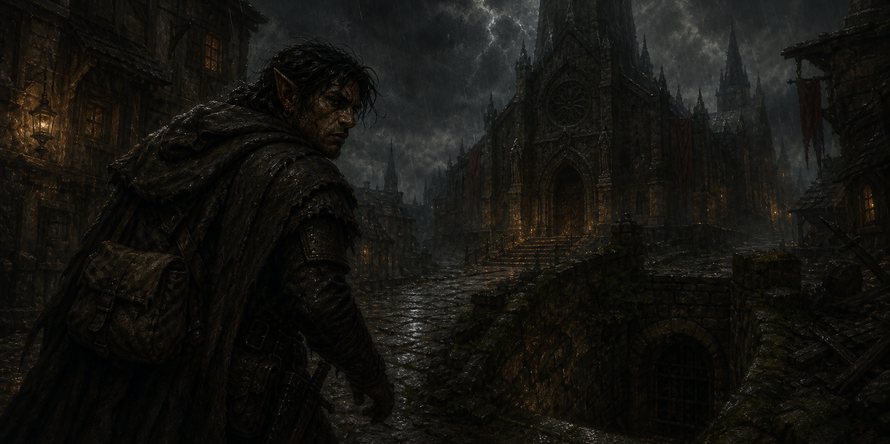

Chapter 2: Basement of the Shrine
Dark Petals


Dark Petals
15048.11.17
晚餐時間過後，布朗與瑪芬先生終於穿越森林，來到了魏斯科。進城後，布朗找到一間名為「酒食樂！」的酒館，便進去用餐。在餐點送上來之前，布朗聽見酒館某處有人正在討論拉索斯的事。出於好奇，他便上前詢問，問對方是否願意告訴他更多關於拉索斯的事情。兩名女人之中，較年輕、容貌姣好的自稱梅莉，另一位年長女子則是瑪蒂達，似乎不太說話。梅莉表示，只要布朗願意各請她們一杯啤酒，她們就願意告訴他一些事。
幾杯酒下肚後，布朗藉機問了不少關於拉索斯的問題，得知這裡的拉索斯教堂名叫服從神社，由卡魯神父主持。另外，他也打聽到，前陣子附近一座名為沃瓦倫的村莊似乎遭到毀滅。兩名女子也注意到了瑪芬先生，而梅莉非常喜歡牠，甚至讓牠坐在自己腿上。聊得正開心時，梅莉起身替布朗點了一杯特別的酒，從吧台端了回來。布朗不疑有他，便一口喝下。不久後，他開始感到暈眩，暈眩，再暈眩。布朗試著站起身去找酒保，向對方要了一杯水。回到座位後，他試圖把瑪芬先生帶走，想找個地方休息，梅莉卻把手按在瑪芬先生身上，不讓布朗帶走。疲憊不堪的布朗最終只好趴在桌上昏睡過去。
睜開雙眼後，布朗感覺自己的身體正在搖晃。他定睛一看，發現自己正被兩個高壯男人前後扛著。發現布朗醒來後，後方的男人示意了一下，兩人便停下腳步。前面的男人朝布朗比了個噓的手勢，接著兩人又繼續扛著他前進。布朗不知道自己身在何處，而瑪芬先生與那兩名女子都已經不見了。
之後，布朗發現自己被丟進一個密閉空間裡，光線昏暗，而且雙手雙腳都被綁住。兩名男人把他的背包丟到他臉上後便離開了。布朗努力掙脫，站起身來，這才發現自己周圍被一圈又一圈的椅子圍繞。而坐在那些椅子上的，全都是屍體，乾枯得只剩白骨。布朗趕緊朝剛才瞥見那兩人離去的方向奔去，順著一段樓梯往上爬。
從樓梯口探出頭來，布朗發現這裡竟然是教堂內部。深夜的教堂裡，只有神父和一名來告解的男子。布朗小心翼翼地壓低身體，悄悄繞出了教堂。他趁著街區幾乎無人的時候，用開鎖技巧闖進一間服飾店，簡單換了裝，接著又折返回教堂。
布朗走進這座教堂，也就是服從神社，和正在聽人告解的神父打了聲招呼，詢問稍後是否方便和他談談。沒過多久，那名男子便離開了。神父自我介紹為卡魯神父，並告訴布朗，這裡一樓是教堂，二樓則是孤兒們居住的地方。布朗好奇地問起教堂是否有地下室，卡魯神父卻只是輕描淡寫地帶過，表示下面只是儲藏間。眼看夜已深，卡魯神父邀請布朗住進二樓，但對卡魯神父並不信任的布朗表示明天再來拜訪，於是便離開了服從神社。
市區裡的旅店仍然營業著，布朗走進了庇護地旅社。兩名櫃檯人員向他說明了一晚住宿的費用，便將鑰匙遞給他。出於好奇，布朗問櫃檯人員是否看過那朵黑色的花。仔細端詳布朗拿出的花朵後，女店員嘉莉亞表示自己沒見過，而男店員艾迪則說自己好像看過。布朗想繼續追問，但艾迪要求他先付點錢才願意幫忙。布朗掏出一枚銀幣，艾迪想了想，表示也許他該去魏斯科的服務中心，那裡或許能提供更多資訊。對於自己付了錢卻幾乎什麼都沒問到，布朗十分不滿，試圖威嚇艾迪。艾迪於是把那枚銀幣還給布朗。然而，就在布朗伸手接過銀幣的瞬間，艾迪另一隻手卻伸向布朗的錢包，想整包偷走。布朗大聲喝斥，最終艾迪才乖乖把錢還給他，轉身走進櫃檯後方的辦公室。
嘉莉亞為艾迪剛才的舉動向布朗道歉，表示這裡值夜班的人通常都是沒什麼經驗的年輕人，或是較底層的人，希望布朗不要放在心上。布朗注意到櫃檯後方掛著一幅畫像，便向嘉莉亞詢問，這才得知庇護地的老闆是這名被稱為諾曼爵士的男子。
15048.11.18
在 213 號房裡，布朗一早就醒了。他背起全部家當，前往「酒食樂！」吃早餐。店裡除了他之外只有兩名男子正在聊天，而布朗聽見他們正在談論卡魯神父，便湊過去詢問。兩名男子自稱是湯米和羅傑，兩人是兄弟，一起經營一間當鋪。他們提到，卡魯神父來到魏斯科的時間不算久，但只要城市有需要幫忙的地方，他都很樂意出手協助。看過布朗拿出的花後，湯米表示自己以前曾在附近的恬靜花園看過類似的花，但也只見過一次。
聽見這條有用的情報後，布朗快速吃完早餐，立刻前往恬靜花園。雖然時間還早，花園內卻早已擠滿遊客。布朗繞了整整一圈，依然找不到類似的花。他想尋找花園的負責人，卻也找不到像是管理者的人影。再加上花園裡人潮洶湧，他連一張能坐下來休息的椅子都找不到。
布朗決定離開花園，回到酒館。簡單向酒館老闆打聽後，布朗決定到服務中心碰碰運氣。
來到服務中心後，一名半身人女子熱情地向布朗打招呼。布朗先問起花園是否有負責人，女子表示花園是由服務中心的人負責管理的。接著，布朗拿出那朵花，想打聽相關線索。女子皺起眉頭，回到座位翻起書來。找了好一陣子後，她終於找到資料。按照她的說法，布朗手上的花是一種名為黑蓮花的植物，在恬靜花園裡只出現過兩三次，而且似乎出現沒多久就會消失。過去可能是被不知名的遊客帶進花園種下的。許多人認為，看見黑蓮花是大富大貴的預兆。女子也提議，如果把黑蓮花賣掉，可以換到不少錢，但一般當鋪未必理解它的價值。若想找真正懂這種花的人，恐怕得前往距離魏斯科步行要好幾年才能抵達的學城，才找得到可能研究它的學者，不過那些人多半也願意開高價買下這朵花。
布朗也順便向這名女子詢問卡魯神父和服從神社的事情。女子表示自己偶爾會去神社看看那些孤兒，但工作太忙，沒有太多時間常去。於是布朗提出邀約，請女子今晚下班後和自己共進晚餐，之後再一起去神社走走，看看那些孤兒。女子聽了非常開心，不過也覺得奇怪，因為布朗連她的名字都還沒問。在布朗追問下，女子這才自我介紹說自己叫昆妮。
等待夜晚來臨的期間，布朗決定去拜訪凱勒布兄弟。雖然凱勒布兄弟對黑蓮花並沒有更多了解，但對於布朗描述的梅莉與瑪蒂達，兩人表示可以去本地的妓院看看，因為那兩人聽起來很像會出現在那種地方的人。布朗提議自己出錢請兩兄弟一起去，於是他們很快便關了店，準備出發。
三人來到名為彩虹叢林的妓院。媽媽桑瓦倫泰女士和布朗確認過需求後，安排三位客人各有兩名女子作伴，接著便叫出整排小姐。布朗在其中看見了自己要找的人，便點了梅莉和瑪蒂達兩人，一同進入房間。
到了房內後，兩名女子正準備開始辦事，布朗卻打斷了她們，質問瑪芬先生的下落。兩名女子試圖將布朗逼到牆角，並朝他發動攻擊。情急之下，布朗無計可施，只好從口袋裡掏出黑蓮花，朝其中一片花瓣舔了下去……
15048.11.17
After dinner, Brown and Mr. Muffins finally made it through the forest and arrived at Wescoe. Once inside the city, Brown found a tavern called "Beer, Food, Fun!" and went in for a meal. Before his food arrived, he overheard people somewhere in the tavern talking about Laxthos. Curious, he went over and asked whether they would be willing to tell him more. Of the two women at the table, the younger and prettier one introduced herself as Maylee. The older woman, Matilda, barely spoke. Maylee said that if Brown would buy each of them a beer, they would be happy to share a few things with him.
As they drank together, Brown slipped in a number of questions about Laxthos and learned that the local Laxthos temple was called the Shrine of Obedience and was run by Father Karu. He also heard that a nearby village called Vowalon had apparently been destroyed not long ago. The two women also noticed Mr. Muffins, and Maylee adored him so much that she even let the pug sit in her lap. As the conversation grew lively, Maylee stood up, ordered a special drink for Brown, and brought it back from the bar herself. Brown thought nothing of it and drank it down. Not long after, he began to feel dizzy. Dizzier. Dizzier still. He tried to stand, went to the barkeep, and asked for a cup of water. After sitting back down, he tried to take Mr. Muffins away so he could find a place to rest, but Maylee pressed her hand down on the dog and refused to let Brown take him. Too exhausted to keep fighting it, Brown finally dropped face-first onto the table and passed out.
When he opened his eyes again, Brown felt his body swaying. Looking up, he realized he was being carried by two large men, one in front and one behind. When they noticed he was awake, the man behind him gave a signal and the two stopped. The man in front held a finger to his lips, then they resumed carrying him onward. Brown had no idea where he was, and Mr. Muffins and the two women were nowhere to be seen.
Brown soon discovered that he had been thrown into a sealed room with very little light, and that both his hands and feet had been tied. After tossing his backpack onto his face, the two men left. Brown struggled free and stood up, only to realize that he was surrounded by rings upon rings of chairs. Sitting in them were corpses, dried out until nothing remained but bone. Brown hurried toward the direction where he had seen the men leave and climbed a staircase upward.
Peeking out from the top of the stairs, Brown discovered that he was inside a church. In the church at that late hour, only a priest and a man making confession remained. Brown crouched low, carefully slipped outside, then broke into a clothing shop in the nearly empty streets and changed clothes using his lockpicking skills before circling back to the church.
Brown entered the church, which was the Shrine of Obedience, and greeted the priest, who was still hearing confession. He asked whether the priest might have time to speak with him later. Not long after, the other man left. The priest introduced himself as Father Karu and explained that the first floor was the church proper while the second floor housed the orphans. Brown asked whether the church had a basement. Father Karu brushed it off lightly and said it was only a storage area below. Since it was already late, Father Karu invited Brown to spend the night upstairs, but Brown did not trust him and said he would come back tomorrow instead. Then he left the Shrine of Obedience.
The inn district was still open, and Brown entered the Shelter Inn. Two clerks explained the nightly rate and handed him a key. Curious, Brown asked them whether they had ever seen the black flower. After examining the blossom he produced, the female clerk, Garlia, said she had never seen one, while the male clerk, Eddie, claimed he thought he had. Brown tried to press him for more, but Eddie demanded money first. Brown took out a silver coin. After thinking it over, Eddie said Brown might want to visit the Wescoe Service Center instead, since they could probably tell him more. Brown was annoyed that he had paid money and learned almost nothing, so he tried to intimidate Eddie. Eddie handed the silver coin back, but the moment Brown reached for it, Eddie's other hand darted toward Brown's purse, trying to snatch the whole thing. Brown shouted at him, and in the end Eddie reluctantly gave it back and retreated into the office behind the counter.
Garlia apologized for Eddie's behavior and explained that the night shift was usually staffed by inexperienced youths or lower-status workers. She hoped Brown would not take it personally. Brown noticed a portrait hanging behind the desk and asked about it. That was how he learned that the owner of the Shelter was a man known as Syr Norman.
15048.11.18
Brown woke early in Room 213. Carrying all his belongings, he returned to Beer, Food, Fun! for breakfast. Aside from him, only two men were in the tavern, and Brown overheard them discussing Father Karu, so he approached them. The two introduced themselves as Tommy and Roger, brothers who ran a pawnshop together. They told him that Father Karu had not been in Wescoe very long, but he always seemed willing to help whenever the city needed anything. After looking at the flower Brown showed them, Tommy said he had once seen something like it in the nearby Quiet Garden, though only once.
Hearing something useful at last, Brown quickly finished eating and headed straight for the Quiet Garden. Even though it was still early, the garden was already packed with visitors. Brown circled the entire place and found nothing like the flower. He tried to locate whoever managed the garden, but could not find anyone who seemed to be in charge. With the crowd so dense, he could not even find a bench to sit down and rest.
Brown decided to leave the garden and return to the tavern. After asking the owner a few simple questions, he chose to try his luck at the service center.
At the service center, a halfling woman greeted Brown enthusiastically. He first asked whether the garden had any specific caretaker, and she explained that the service center staff managed it. Brown then brought out the flower and asked if she knew anything about it. The woman frowned, returned to her desk, and began flipping through books. After quite a while, she finally found something. According to her, the flower Brown had was called a black lotus. It had only been recorded in the Quiet Garden two or three times, and whenever it appeared, it seemed to vanish again not long after. It might have been planted there by some unknown visitor. Many people considered the sight of a black lotus a sign of future wealth and fortune. She also suggested that Brown could earn a good deal of money by selling it, though an ordinary pawnshop might not understand its worth. If he wanted a real scholar, he would have to go all the way to the Academy City, a journey that might take years on foot from Wescoe, but any scholar there would likely pay a high price for such a flower.
Brown also asked her about Father Karu and the Shrine of Obedience. She said she went there from time to time to visit the orphans, but her work kept her too busy to go often. Brown then invited her to have dinner with him after work that evening and afterward walk over to the shrine together to see the children. She was delighted, though also amused that Brown had invited her out before even asking her name. When he finally did, she introduced herself as Queenie.
While waiting for nightfall, Brown decided to visit the Caleb brothers. The brothers could offer no more information about the black lotus, but when Brown described Maylee and Matilda, they suggested checking the local brothel, since the pair sounded exactly like the sort of women who might be found there. Brown offered to pay for the outing, so the brothers quickly shut the shop and prepared to go.
The three of them went to the brothel known as Rainbow Jungle. After confirming what they wanted with Madam Valentine, she arranged for each guest to have two women and called out a whole line of girls. Brown spotted the two he was looking for and chose Maylee and Matilda, then went with them into a room.
Once inside, the two women were ready to get to work, but Brown cut them off and demanded to know where Mr. Muffins was. The women tried to force him into a corner and attacked him. With no better option, Brown pulled out the black lotus from his pocket and licked one of its petals...